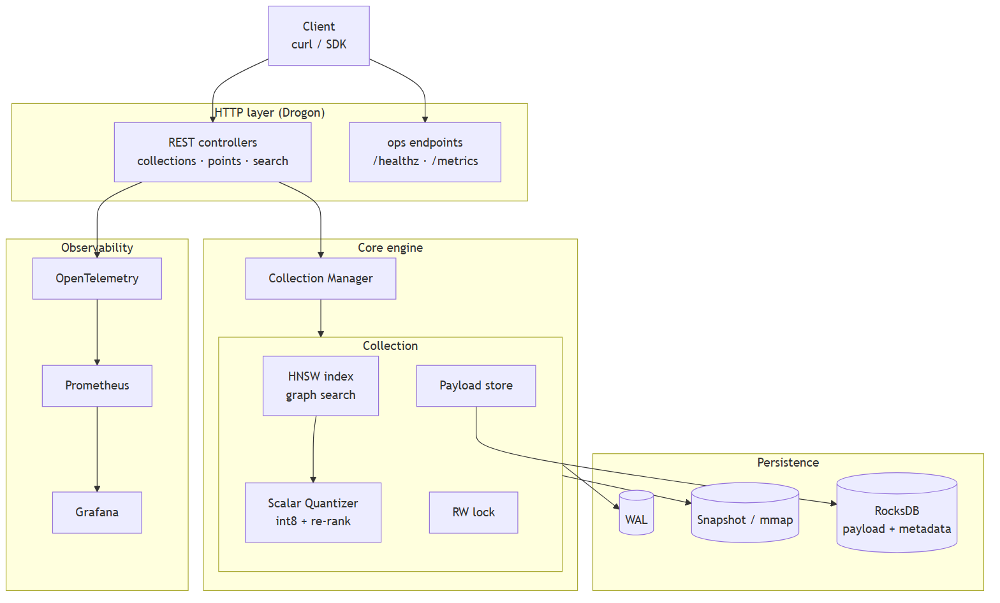
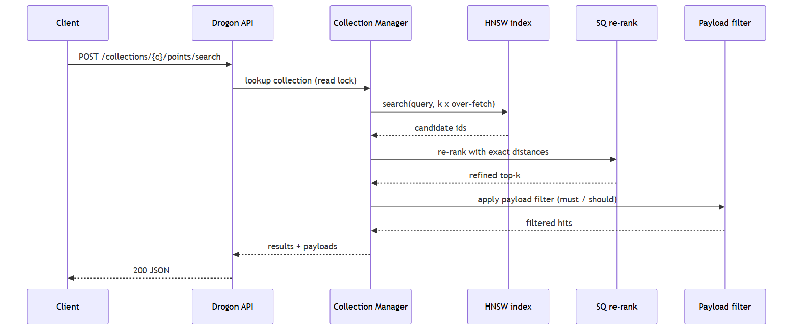
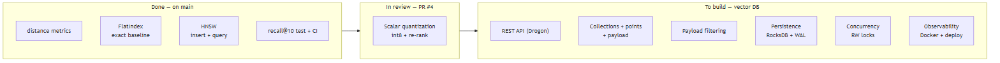

VectorSearch is an approximate nearest neighbor (ANN) engine wrapped as a standalone database service. It stores high-dimensional vectors with attached JSON payloads, and answers "find the k most similar vectors to this query, optionally filtered by payload" over an HTTP API.
The hard core - the HNSW graph index and int8 scalar quantization - is written from scratch with no third-party ANN library. The surrounding database layer (API, collections, payload filtering, persistence, observability) turns that engine into a deployable service, in the same spirit as Qdrant or FAISS-server.
Requests enter through the Drogon HTTP layer. The Collection Manager owns one index per collection; a search runs the HNSW graph, refines the shortlist with exact distances on the quantized vectors, then applies the payload filter. Writes go to a WAL and periodic snapshots; payloads and metadata live in RocksDB. Every request is traced through OpenTelemetry.

A search over-fetches candidates from the graph (k times an over-fetch factor), re-ranks them with exact distances so the returned order is accurate, and only then filters by payload. Over-fetching before filtering keeps recall high when filters are selective.

| Entity | Fields | Notes |
|---|---|---|
Collection | name, dim, metric, index params | One HNSW index + payload store, guarded by a read/write lock. |
Point | id (uint64), vector (f32[dim]), payload (JSON) | The unit of storage and retrieval. |
Payload | arbitrary key/value JSON | Used for hybrid filtering during search. |
Neighbor | id, distance, payload | A single search result, sorted closest first. |
| Method | Path | Purpose |
|---|---|---|
| PUT | /collections/{name} | Create a collection (dim, metric, params) |
| GET | /collections/{name} | Collection info + point count |
| PUT | /collections/{name}/points | Upsert points (id, vector, payload) |
| POST | /collections/{name}/points/search | k-NN search with optional payload filter |
| DELETE | /collections/{name}/points/{id} | Delete a point |
| GET | /healthz · /metrics | Liveness probe · Prometheus metrics |
The contract is published as an OpenAPI spec so a typed client SDK can be generated.
Durability is layered so a crash never loses an acknowledged write and restart is fast:

| Milestone | Scope | Status |
|---|---|---|
| Engine | distance metrics, FlatIndex, HNSW insert + query, recall test, CI | done |
| Quantization | scalar int8 codec + exact re-rank pass | in review |
| M1 | Drogon service skeleton + /healthz | to build |
| M2 | collections + points + payload, core REST API | to build |
| M3 | payload filtering (hybrid search) | to build |
| M4 | persistence: RocksDB + WAL + snapshot recovery | to build |
| M5 | concurrency: per-collection RW locks | to build |
| M6 | observability + Docker + Fly.io deploy | to build |
| Layer | Choice | Why |
|---|---|---|
| Engine | C++17, from scratch | full control over the data structures and performance |
| HTTP | Drogon (async C++) | fast, modern, one language with the engine |
| Storage | RocksDB | battle-tested embedded KV, what real databases build on |
| Observability | OpenTelemetry + Prometheus + Grafana | standard, vendor-neutral telemetry |
| Delivery | Docker + Fly.io | reproducible build, one-command edge deploy |
| Contract | OpenAPI (REST) | generated clients, clear API surface |